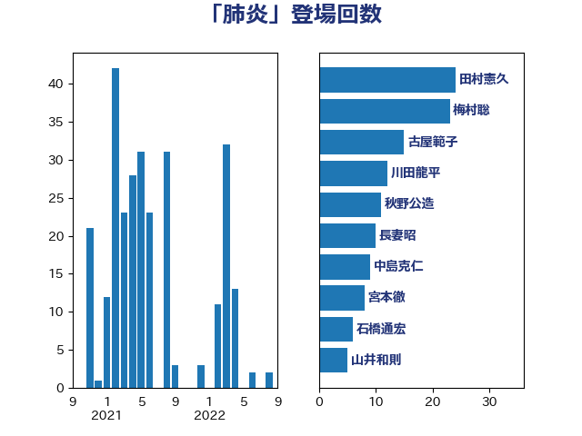

単語「肺炎」

| 田村憲久 | 自由民主党 | 24 回 |
| 梅村聡 | 日本維新の会 | 23 回 |
| 古屋範子 | 公明党 | 15 回 |
| 川田龍平 | 立憲民主党 | 12 回 |
| 秋野公造 | 公明党 | 11 回 |
| 長妻昭 | 立憲民主党 | 10 回 |
| 中島克仁 | 立憲民主党 | 9 回 |
| 宮本徹 | 日本共産党 | 8 回 |
| 石橋通宏 | 立憲民主党 | 6 回 |
| 山井和則 | 立憲民主党 | 5 回 |
| 後藤茂之 | 自由民主党 | 4 回 |
| 中山展宏 | 自由民主党 | 3 回 |
| 佐藤英道 | 公明党 | 3 回 |
| 山田宏 | 自由民主党 | 3 回 |
| 杉尾秀哉 | 立憲民主党 | 3 回 |
| 三原じゅん子 | 自由民主党 | 2 回 |
| 吉田統彦 | 立憲民主党 | 2 回 |
| 塩川鉄也 | 日本共産党 | 2 回 |
| 比嘉奈津美 | 自由民主党 | 2 回 |
| 田中健 | 国民民主党 | 2 回 |
| 畦元将吾 | 自由民主党 | 2 回 |
| 一谷勇一郎 | 日本維新の会 | 1 回 |
| 伊佐進一 | 公明党 | 1 回 |
| 国光あやの | 自由民主党 | 1 回 |
| 小池晃 | 日本共産党 | 1 回 |
| 小西洋之 | 立憲民主党 | 1 回 |
| 山崎正恭 | 公明党 | 1 回 |
| 山本博司 | 公明党 | 1 回 |
| 山際大志郎 | 自由民主党 | 1 回 |
| 本村伸子 | 日本共産党 | 1 回 |
| 武井俊輔 | 自由民主党 | 1 回 |
| 水岡俊一 | 立憲民主党 | 1 回 |
| 浜田聡 | NHK党 | 1 回 |
| 田村智子 | 日本共産党 | 1 回 |
| 田村貴昭 | 日本共産党 | 1 回 |
| 石川博崇 | 公明党 | 1 回 |
| 稲津久 | 公明党 | 1 回 |
| 篠原孝 | 立憲民主党 | 1 回 |
| 菅直人 | 立憲民主党 | 1 回 |
| 西村康稔 | 自由民主党 | 1 回 |
| 阿部知子 | 立憲民主党 | 1 回 |
| 高木かおり | 日本維新の会 | 1 回 |
| 高村正大 | 自由民主党 | 1 回 |